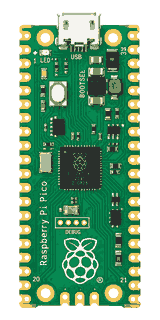
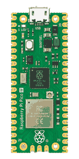
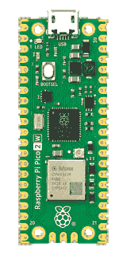

Raspberry Pi Pico
實體程式設計的入門核心
採用 RP2040 微控制器，適合感測器讀取、燈光互動與馬達控制等實作，讓學生透過可觀察的硬體反應，理解程式與真實世界的連結。

 MangoBoxAI 精準教學平台
MangoBoxAI 精準教學平台
從實體程式設計出發，理解學習歷程，支持每一步成長。
MangoBox 由國立臺北商業大學數位多媒體設計系歐陽芳泉副教授研發，整合實體運算硬體、韌體、程式開發工具與教學應用，讓學生從感測與互動實作入門，逐步深入程式邏輯、硬體控制與 AI 協作。
平台以不同抽象層次的程式設計方式，支持不同起點的學習者，並保留探索底層原理的空間。研究進一步以學生在程式撰寫、AI 互動與硬體操作中的學習歷程為基礎，朝向學習困難診斷、個人化回饋與教師教學決策支持發展，讓教學更能回應學生的實際需要。
MangoBox 支援 Raspberry Pi Pico、Pico W 與 Pico 2 W，作為執行程式、讀取感測資料與控制裝置的核心。搭配對應的 MangoBox 電路板與韌體，可從基礎程式練習延伸至無線互動與物聯網應用。
採用 RP2040 微控制器，適合感測器讀取、燈光互動與馬達控制等實作，讓學生透過可觀察的硬體反應，理解程式與真實世界的連結。

採用 RP2040 微控制器並具備 Wi-Fi 能力，讓實體運算作品進一步探索資料傳輸、裝置連線與物聯網應用。

採用新一代 RP2350 微控制器，具備更充裕的運算與記憶體資源，並支援 Wi-Fi，為較複雜的感測整合、互動控制與連網專題提供基礎。

MangoX2 與 MangoLite 由羅治民教授研發，作為 MangoBox 連結程式與實體世界的硬體基礎。兩款電路板透過模組化介面整合感測、控制與擴充能力，以降低實體運算的入門門檻，同時保留動手實作與延伸探索的空間，讓學生逐步將想法實現為互動裝置、智慧車與機器人作品。
MangoX2 提供感測器、伺服馬達與擴充模組介面，並具備馬達控制能力。板上預留 mini 麵包板安裝區，讓學生除了使用現成模組，也能練習接線、探索基本電路，逐步完成自己的互動原型。
MangoLite 在緊湊的板型中整合常用模組介面、馬達控制，以及 RGB、按鈕、蜂鳴器與紅外線等基本輸入輸出功能。學生可從簡單互動快速開始，再搭配外接感測器與控制模組，發展物聯網裝置與機器人作品。
依不同課程與教學目標，將電路板、功能模組、教材與範例整合成可直接應用於課堂的教學套件。
以 MangoX2 為核心的輪型車入門套件，讓學生從程式控制、感測與馬達驅動開始，逐步完成可實際移動與互動的智慧車作品。
以程式設計學習為核心，透過實體輸入、輸出與互動模組，讓學生能直接觀察程式執行結果，將抽象的程式邏輯轉化為可操作、可觀察的實體作品。
以 MangoLite 搭配 Raspberry Pi Pico 2 W，聚焦無線連線、感測資料、智慧控制與物聯網應用，作為未來 IoT 與 AIoT 教學的核心套件。
MangoBox 的軟硬體工具依不同電路板與教學套件共同設計，從韌體執行、裝置設定、測試維護到程式與積木開發，提供完整的使用環境。
規劃中的桌面圖形化程式設計環境，讓學生以積木方式控制 MangoBox 套件與實體裝置。
瀏覽器端的積木程式設計環境，目前作為功能與操作流程測試使用。
MangoBox 的 AI 精準教學研究，規劃整合學生在 AI、軟體與硬體中的學習歷程，透過歷程資料分析與 AI 輔助，朝向學習困難辨識、問題診斷，以及教師與學生的教學支持發展。以下呈現研究架構與發展方向。
學生 × AI × 軟體 × 硬體
從實體運算電路板、教學套件、專屬韌體與軟體，到 AI 精準教學平台，MangoBox 將硬體實作、程式學習與教學支持整合為一個持續發展的教學生態系。